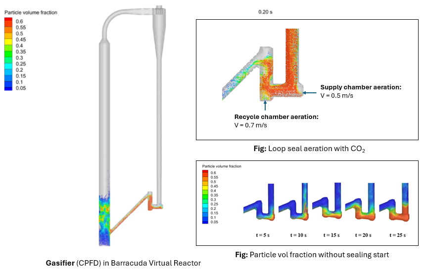

UTEP Partners with CPFD Software to Advance Blue Hydrogen Research Using Barracuda Virtual Reactor
Feature: UTEP Aerospace Center researchers apply Barracuda Virtual Reactor to model fluidized-bed co-gasification for blue hydrogen research.
The article highlights collaboration between UTEP and CPFD Software to model and optimize fluidized-bed systems that convert municipal solid waste and biomass into blue hydrogen fuel. It also notes the team’s focus on co-gasification, feedstock variability, reactor performance, techno-economic analysis, and life-cycle assessment.
Read the UTEP article